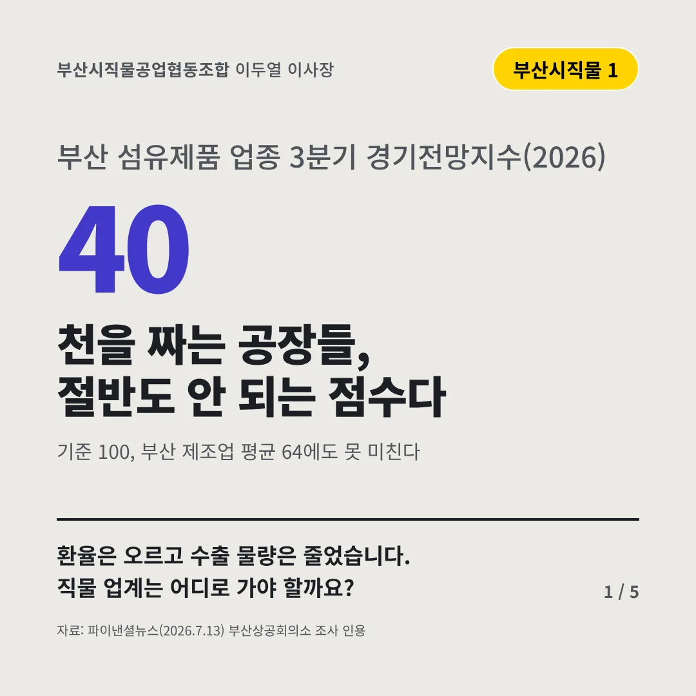
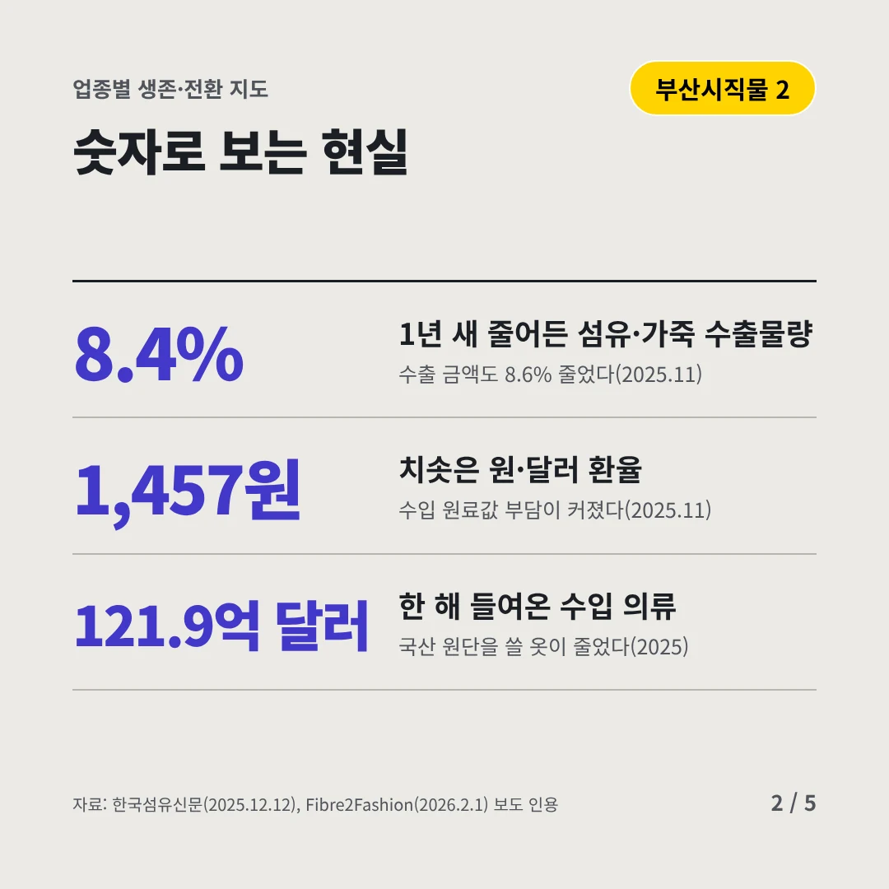
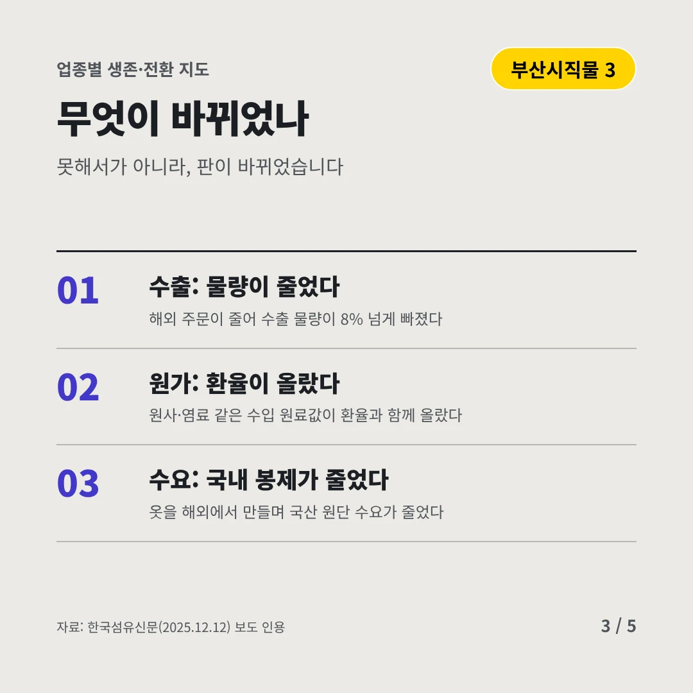
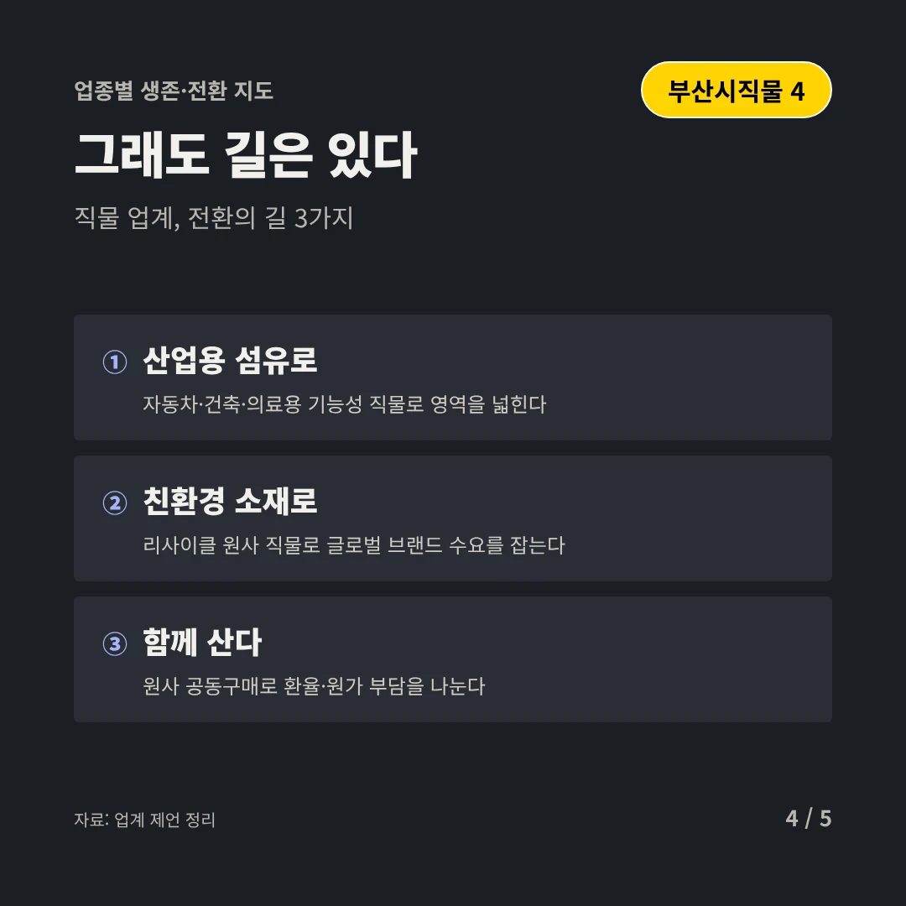
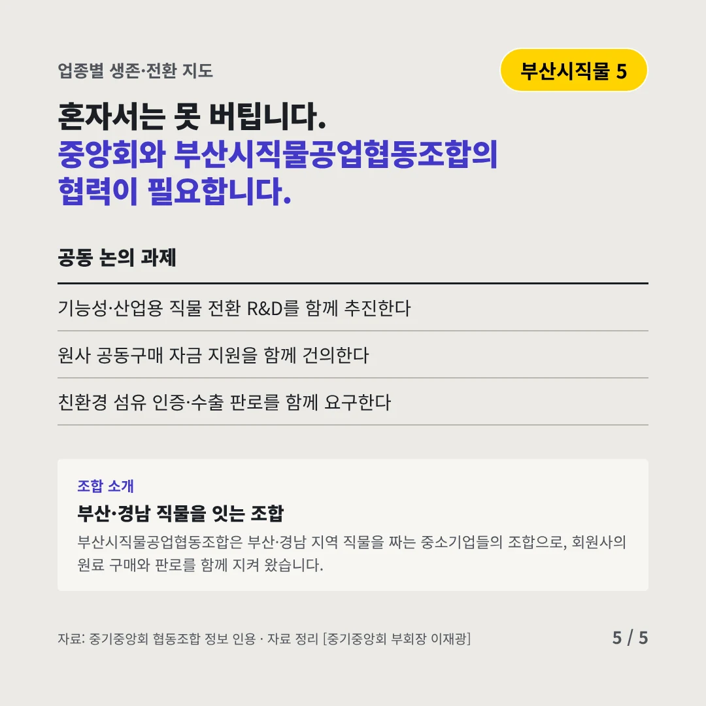
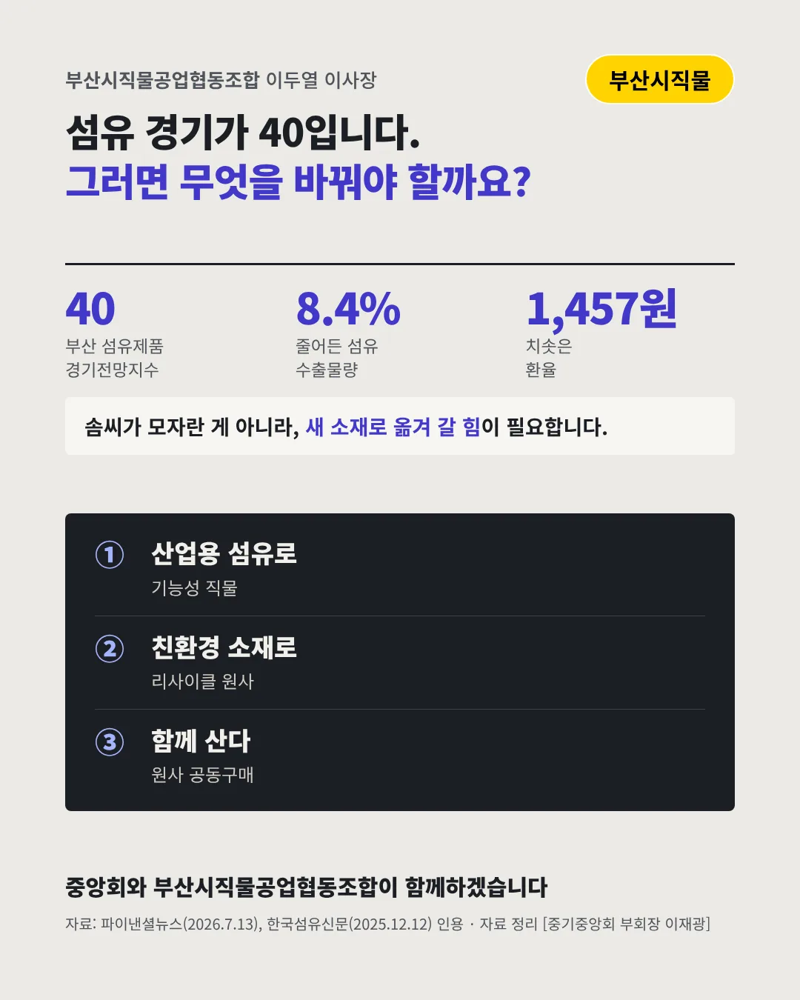

부산시직물공업협동조합이두열 이사장
천을 짜는 공장들, 절반도 안 되는 점수다
40 부산 섬유제품 업종 3분기 경기전망지수(2026)






환율은 오르고 수출 물량은 줄었습니다. 직물 업계는 어디로 가야 할까요?
숫자로 보는 현실
- 8.4%1년 새 줄어든 섬유·가죽 수출물량수출 금액도 8.6% 줄었다(2025.11)
- 1,457원치솟은 원·달러 환율수입 원료값 부담이 커졌다(2025.11)
- 121.9억 달러한 해 들여온 수입 의류국산 원단을 쓸 옷이 줄었다(2025)
무엇이 바뀌었나
- 수출: 물량이 줄었다해외 주문이 줄어 수출 물량이 8% 넘게 빠졌다
- 원가: 환율이 올랐다원사·염료 같은 수입 원료값이 환율과 함께 올랐다
- 수요: 국내 봉제가 줄었다옷을 해외에서 만들며 국산 원단 수요가 줄었다
그래도 길은 있다
- 산업용 섬유로자동차·건축·의료용 기능성 직물로 영역을 넓힌다
- 친환경 소재로리사이클 원사 직물로 글로벌 브랜드 수요를 잡는다
- 함께 산다원사 공동구매로 환율·원가 부담을 나눈다
한 장 요약

조합 소개
부산시직물공업협동조합은 부산·경남 지역 직물을 짜는 중소기업들의 조합으로, 회원사의 원료 구매와 판로를 함께 지켜 왔습니다.
자료: 파이낸셜뉴스(2026.7.13), 한국섬유신문(2025.12.12), Fibre2Fashion(2026.2.1)